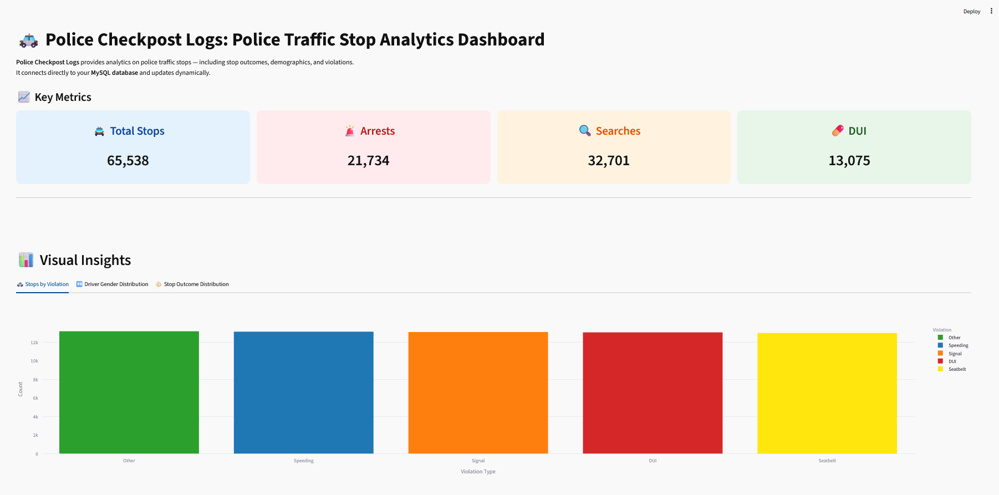
Yogaprabhu Ramesh Kanna
Robotics & AI/ML Candidate
Mechatronics engineer with a combined interest in Machine Learning/AI, data science, and Robotics.
Hands-on experience spans underactuated system control (PID-stabilized quadcopter), operating a robotic
arm, UAV, and mobile robots using ROS and Gazebo, and end-to-end ML pipelines (classification models
deployed via Streamlit).
Open to opportunities spanning Robotics Research, AI/ML, and Data Science.
Education
Masters of Science in General Management
Apr 2023 – Aug 2025Göttingen, Germany
PFH Private Hochschule Göttingen
- Relevant coursework: International Marketing, Industrial & Logistics Management, Strategic Management, Digital Business Models, Risk Management in Global Supply Chains, Corporate Governance.
- Active participation in case studies, business simulations, and cross-cultural team projects.
- Master's Thesis:
Enabling a Sustainable Circular Economy through Industry 4.0 : Innovations, Challenges, and Future Prospects. - Project works:
- Study of supply chain risk management in Toyota, Apple, and Unilever.
- Study of the Evolution of Marketing.
- Diversity in Human Resource Management.
Bachelor of Technology in Mechatronics Engineering with specialization in Robotics
Jun 2018 – May 2022Chennai, India
SRM Institute of Science and Technology
- Relevant coursework: Robotics & Mechatronics, Embedded Systems, Control Systems, Machine Design, Power Electronics.
- Final-year project: Design and Fabrication of Smart Helmet Designing – focused on rider safety and embedded electronics.
- Built a strong foundation in mechanical design, embedded programming, and automation systems — spanning both coursework and self-directed projects.
Projects
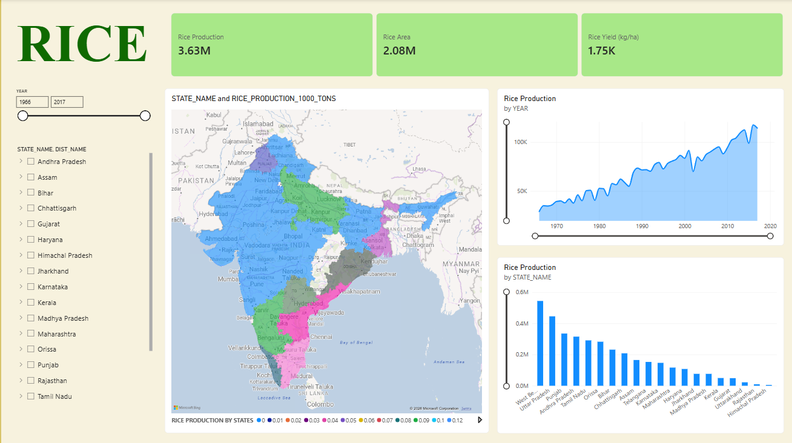
Indian Agriculture Analysis (AgriData Explorer)
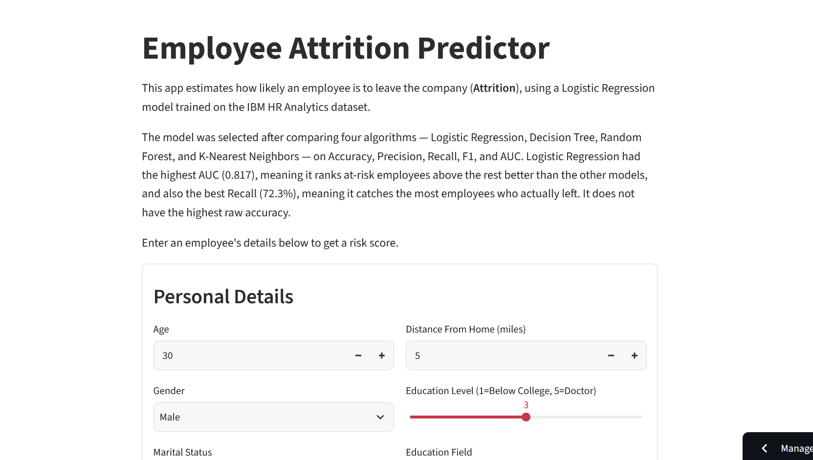
Employee Attrition Prediction
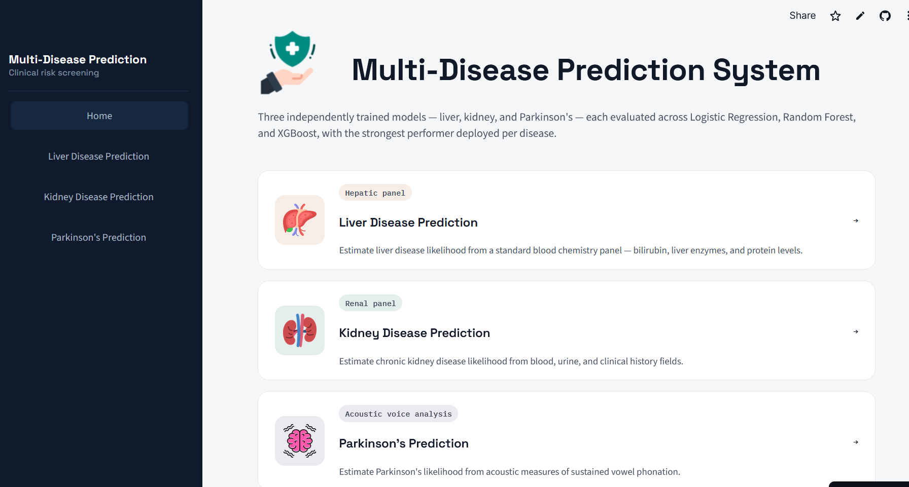
Multi-Disease Prediction System
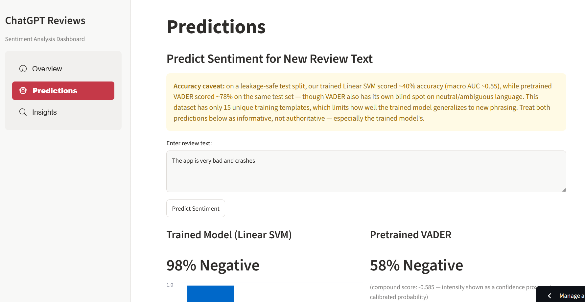
ChatGPT Reviews Sentiment Analysis
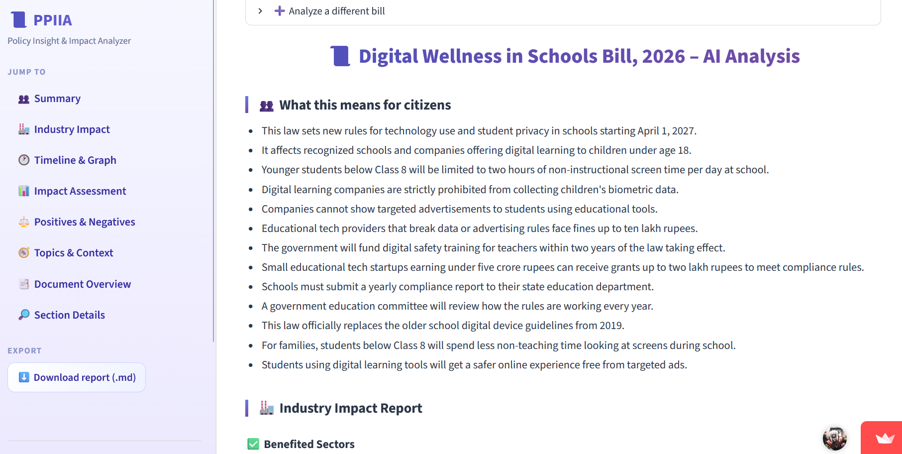
Public Policy Insight & Impact Analyzer (AI Policy Analyzer)
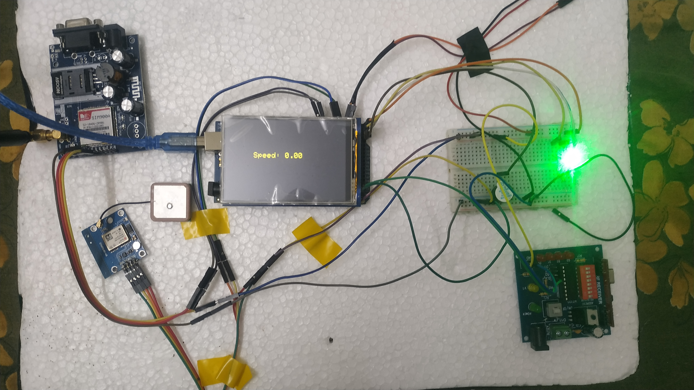
Smart Helmet
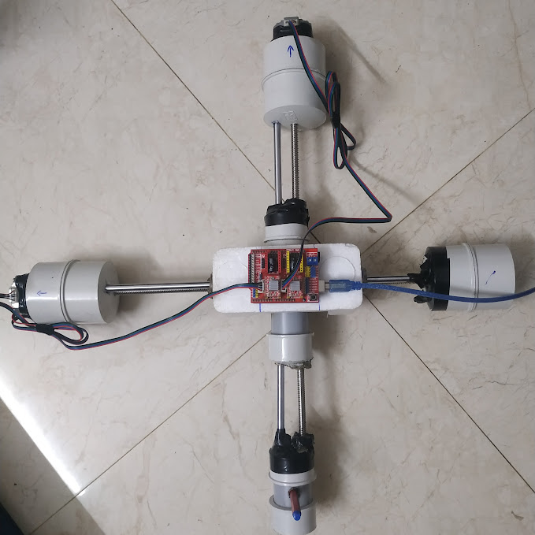
CNC Plotter
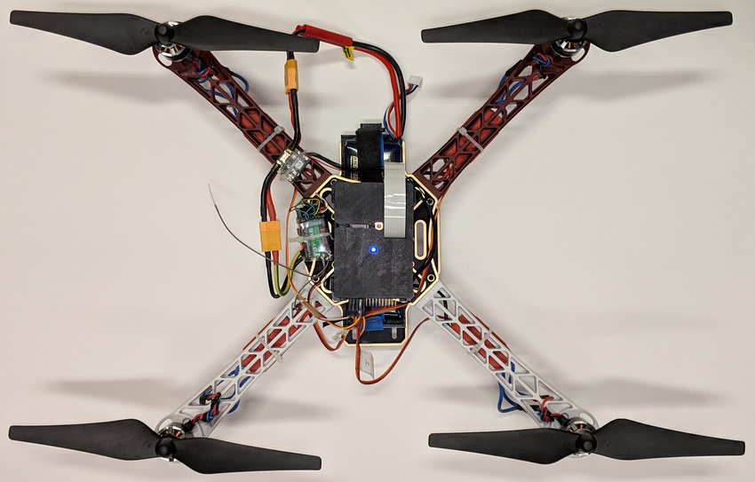
UAV - Autonomous Quadcopter
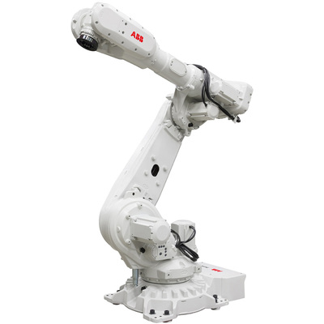
Robotic Arm, UAV & Mobile Robot Operation
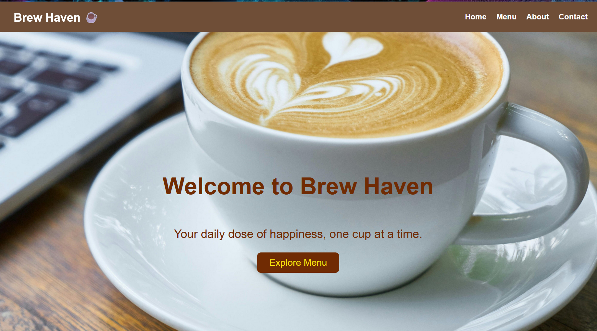
Coffee Website
Responsive mock coffee shop website built with HTML, CSS & JS. Click to visit live site.
Courses
Data Science Program with IIT-M Pravartak Certification
Jan 2026 – May 2026HCL GUVI
Robotics and Control: Theory & Practice
Jan 2021 – Mar 2021NPTEL Repository
Introduction to Virtual Reality
Jan 2021University of London – Coursera
Skills
Data Analysis & Visualization
- Python (Pandas, NumPy)
- SQL & MySQL (joins, CTEs, window functions, indexing)
- Exploratory Data Analysis
- Data Cleaning & Preprocessing
- Statistical Analysis & Hypothesis Testing
- Power BI
- Plotly, Matplotlib, Seaborn
- Jupyter
Machine Learning & Deep Learning
- Scikit-learn (pipelines, classification, regression)
- XGBoost, Random Forest, Logistic Regression
- Neural Networks (LSTM with TensorFlow/Keras, PyTorch)
- Feature Engineering
- Model Evaluation (cross-validation, AUC-ROC / recall / F1 on imbalanced data, data-leakage detection)
NLP, LLMs & AI Applications
- NLTK, TF-IDF, NMF topic modelling, VADER sentiment
- LLM integration (Google Gemini API, OpenAI SDK)
- Structured JSON output with Pydantic validation
- Map-reduce summarization of long documents
- Knowledge graphs (NetworkX, Graphviz)
Deployment & Tools
- Streamlit (Community Cloud)
- Git / GitHub
- joblib model packaging
- MySQL / TiDB
- VS Code
- SAP ERP
- AutoCAD / SolidWorks
- C/C++, Java, HTML/CSS
Also Studied
- Computer Vision (CNNs)
- AWS
- Langflow
Robotics & Control Systems
- Mechatronics & Robotics
- PID & Feedback Control
- System Dynamics & Kinematics
- Embedded Systems & Microcontrollers (Arduino, Raspberry Pi)
- Sensor Integration & Telemetry
- Electrical Machines & Actuators
- Power Electronics & Drives
Robotics Software & Simulation
- ROS
- Gazebo
- Proteus
- MATLAB / Simulink
Soft Skills
- Problem Solving & Critical Thinking
- Project Planning & Execution
- Team Collaboration
- Technical Documentation
Languages
English
Tamil
Hindi
German
Volunteering & Leadership
Erasmus Student Network (ESN)
Nov 2023 – Oct 2024Göttingen, Germany
Student Buddy & Event Coordinator
- Supported the incoming international students by providing guidance and resources.
- Coordinated cultural and social events for the student community.
- Collaborated with a team of volunteers to plan and execute successful monthly activities and meetups.
- Developed strong communication and leadership skills through regular interaction with diverse student groups.
DSA - Directorate of Student Affairs
Jul 2018 – Mar 2020SRM Institute of Science and Technology
Member
- Organize and manage various campus-wide cultural and sports events, including fests and inter-departmental competitions.
- Gained hands-on experience in event planning, logistics, and student engagement.
NSS - National Service Scheme
Jun 2018 – May 2019SRM Institute of Science and Technology
Volunteer
- Participated in community outreach, social awareness programs, and environmental initiatives.
Get in Touch
Email : yogs1603@gmail.com
Phone : +91 72995 63555
LinkedIn : linkedin.com/in/yoga-prabhu
GitHub : github.com/SyberSage